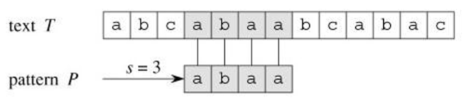
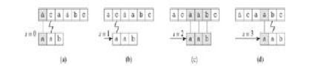
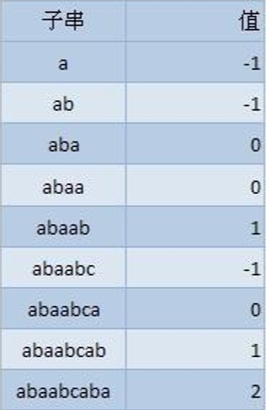

最近经常使用Windows 10 预览版自带的pdf阅读器看书，有时候为了快速找到我感兴趣的内容，就会使用文档关键字搜索 关键字搜索使用的就是我们要说的字符串匹配，即是在给定的母串中快速找到目的串的算法。
《算法导论》上这样定义它：假设文本是一个长度为 n 的数组 T[1...n]，模式是一个长度为 m<=n 的数组 P[1....m]。 进一步假设 P 和 T 的元素都是属于有限字母表 Σ.中的字符

目标字符串是 T=abcabaabcaabac，模式 P=abaa 。
由图可以看到，abaa在索引3处出现。我们能想到最简单的匹配方法是循环遍历所有的字符
//最简单的匹配伪代码
String-Match(T, P)
n ← length[T]
m ← length[P]
for s from 0 to n - m
do if P[1 ‥ m] = T[s + 1 ‥ s + m]
//对 n-m+1 个可能的位移 s 中的每一个值，比较相应的字符的循环必须执行 m 次。
then print "Pattern occurs with shift" s
过程如下：时间复杂度O((n-m+1)m) 
//简单匹配代码实现
//测试match("banananobano","nano")
int String_Match(const string &target, const string &pattern){
int target_len = target.size();
int pattern_len = pattern.size();
int target_index = 0;
int pattern_index = 0;
while(target_index < target_len && pattern_index < pattern_len){
if(target[target_index] == pattern[pattern_index]){
target_index++;
pattern_index++;
}
else {
target_index -= (pattern_index - 1);
pattern_index = 0;
}
}
if(pattern_index == pattern_len){
return target_index - pattern_len;
}
else
return -1;
}
算法复杂度O(target_len*pattern_len)。仔细观察测试用例的话我们会发现，当target_index = 2时，后面我们匹配了3个字符，第四个不匹配，那么target_index就回到了3； 此时如果向右移动一位，那么 nan 最先匹配的字符序列将是 an,这肯定是不能匹配的， 之后再右移一位，匹配的是 nan 最先匹配的序列是 n,这是可以匹配的。 如果我们事先知道 pattern本身的这些信息就不用每次匹配失败后都把target_index回退回去，也就是说设法将不可能匹配的字符直接跳过，提高效率。
下面进入我们的主题部门，使用KMP算法解决该问题，在此之前我们先要明白几个概念： 覆盖函数 覆盖函数所表征的是 pattern 本身的性质，可以让为其表征的是 pattern 从左开始的所有连续子串的自我覆盖程度。 比如如下的字串，abaabcaba的覆盖，代表的是前k个字符和后k个字符一样  即 k = -1代表前后没有字符覆盖 k = 0代表有一个字符覆盖，例如aba中，a = a k = 1代表有两个字符覆盖，例如abaab中，ab = ab ... 以此类推
//计算覆盖函数的代码
int[] Overlay(const string &pattern, int *overlay_function){
const int pattern_len = pattern.size();
int index;
overlay_function[0] = -1;
for(int i = 1; i < pattern_len; i++){
index = overlay_function[i-1];
while(index >= 0 && pattern[i] != pattern[index + 1]){
index = overlay_function[index];
}
if(pattern[i] == pattern[index+1]){
overlay_function[i] = index + 1;
}
else {
overlay_function[i] = -1;
}
}
return overlay_function;
}
还是从左向右匹配，但是当失配发生时，我们不用把 target_index 向回移动，target_index 前面已经匹配过的部分在 pattern 自身就能体现出来，只要改动 pattern_index 就可以了。 当发生在 j 长度失配时，只要把 pattern 向右移动 j-overlay(j)长度就可以了。 如果失配时 pattern_index==0，相当于 pattern 第一个字符就不匹配， 这时就应该把 target_index 加 1，向右移动 1 位就可以了。
//KMP算法代码
int KMP(const string &target, const string& pattern){
const int target_len = target.size();
const int pattern_len = pattern.size();
int *overlay_function = new int[pattern_len];
//调用生成覆盖函数
Overlay(pattern,overlay_function);
//匹配开始
int pattern_index = 0;
int target_index = 0;
while(pattern_index < pattern_len && target_index < target_len){
if(target[target_index] == pattern[pattern_index]){
target_index++;
pattern_index++;
}else if(pattern_index == 0){
target_index++;
}else {
pattern_index = overlay_function[pattern_index-1] + 1;
}
}
if(pattern_index == pattern_len){
return target_index - pattern_index;
}else {
return -1;
}
delete []overlay_function;
}
//9分的代码
char* strcpy(const char *sreDest, const char *strSrc){
//为实现链式操作，将目的地址返回，加分2分
assert((strDest != NULL) && (strSrc != NULL));
char *address = strDest;
while((*strDest++ = *strSrc++) != '\0');
return address;
}
//10分的代码
char* strcpy(const char *sreDest, const char *strSrc){
//如果有考虑源地址和目的地址区域有重叠的情况，加分1分
if(strDest == strSrc)
return strDest;
assert((strDest != NULL) && (strSrc != NULL));
char *address = strDest;
while((*strDest++ = *strSrc++) != '\0');
return address;
}
除了上面说的之外，其实还有很多细节问题，例如关于字符串的命名，strDest之类一定是比ab这些好多了，所以，有很多需要注意的。不知道你是否考虑到这些呢？说实话，第一次在网上看到关于这个问题的讨论后，简直自己弱爆了，带着兴奋和膜拜记下了这些，并一直认真阅读。不知道大家什么赶脚......